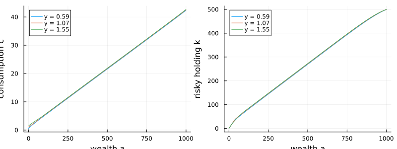

Achdou–Han–Lasry–Lions–Moll: portfolio choice with two assets
This extends the Achdou–Han–Lasry–Lions–Moll consumption–saving problem to a portfolio choice between a riskless asset (return $r$) and a risky asset (return $\mu_R$, volatility $\sigma_R$). A household with total wealth $a$ chooses consumption $c$ and how much of its wealth $k$ to hold in the risky asset, subject to no short-selling and no leverage ($0 \le k \le a - a_{\min}$). Labor income $y$ follows the same mean-reverting diffusion. Wealth evolves as $da = \bigl(y + r a + (\mu_R - r) k - c\bigr)dt + \sigma_R k\, dW$ and the value function $v(y, a)$ solves
\[\rho\, v = \max_{c,\,k}\; \frac{c^{1-\gamma}}{1-\gamma} + \partial_a v\,\bigl(y + r a + (\mu_R - r) k - c\bigr) + \tfrac12 \sigma_R^2 k^2\, \partial_{aa} v + \partial_y v\,\kappa_y(\bar y - y) + \tfrac12 \sigma_y^2\, \partial_{yy} v.\]
The first-order conditions are $c = (\partial_a v)^{-1/\gamma}$ for consumption and the Merton rule $k = -\tfrac{\mu_R - r}{\sigma_R^2}\,\partial_a v / \partial_{aa} v$ for the risky holding, clamped to $[0, a - a_{\min}]$.
The model
using EconPDEs, Distributions, Plots
Base.@kwdef struct AchdouHanLasryLionsMoll_DiffusionTwoAssetsModel
# income process parameters
κy::Float64 = 0.1
ybar::Float64 = 1.0
σy::Float64 = 0.07
r::Float64 = 0.03
μR::Float64 = 0.04
σR::Float64 = 0.1
# utility parameters
ρ::Float64 = 0.05
γ::Float64 = 2.0
amin::Float64 = 0.0
amax::Float64 = 1000.0
endMain.AchdouHanLasryLionsMoll_DiffusionTwoAssetsModelAs in the one-asset model, income is upwinded on $\mu_y$ and the endogenous asset drift picks the forward/backward derivative that keeps its sign consistent. At each candidate we also solve the Merton portfolio rule for $k$. The boundary branches impose the borrowing constraint at $a_{\min}$ and a homothetic tail at $a_{\max}$. We save consumption $c$, the risky holding $k$, and the saving rate $\mu_a$ on the grid.
function (m::AchdouHanLasryLionsMoll_DiffusionTwoAssetsModel)(state::NamedTuple, u::NamedTuple)
(; κy, σy, ybar, r, μR, σR, ρ, γ, amin, amax) = m
(; y, a) = state
(; v, vy_up, vy_down, va_up, va_down, vyy, vya, vaa) = u
μy = κy * (ybar - y)
# Newton can try negative marginal values, so cap implied consumption instead of flooring derivatives.
cmax = 100.0 * (y + r * max(a, 0.0))
# upwinding for income direction (easy because exogenous income drift)
vy = (μy >= 0) ? vy_up : vy_down
# upwinding for asset direction (harder because endogeneous asset drift)
c_up = va_up > 0 ? min(va_up^(-1 / γ), cmax) : cmax
k_up = (μR - r) / σR^2 * (-va_up / vaa)
k_up = clamp(k_up, 0.0, a - amin)
μa_up = y + r * a + (μR - r) * k_up - c_up
if μa_up >= 0.0
va = va_up
c = c_up
k = k_up
μa = μa_up
else
c_down = va_down > 0 ? min(va_down^(-1 / γ), cmax) : cmax
k_down = (μR - r) / σR^2 * (-va_down / vaa)
k_down = clamp(k_down, 0.0, a - amin)
μa_down = y + r * a + (μR - r) * k_down - c_down
if (μa_down <= 0.0) && (a >= amin)
va = va_down
c = c_down
k = k_down
μa = μa_down
else
# If the two candidates straddle zero OR drift is negative at minimum asset threshold
# (i.e. borrowing constraint), then, we must have drift μa = 0.
c = y + r * a
for _ in 1:30
va = c^(-γ)
k = (μR - r) / σR^2 * (-va / vaa)
k = clamp(k, 0.0, a - amin)
c = y + r * a + (μR - r) * k
end
va = c^(-γ)
k = (μR - r) / σR^2 * (-va / vaa)
k = clamp(k, 0.0, a - amin)
c = y + r * a + (μR - r) * k
μa = 0.0
end
end
σa = k * σR
# There is no second derivative at 0 so just specify first order derivative
if (a ≈ amin) && (μa <= 0.0)
va = (y + r * a)^(-γ)
k = 0.0
c = y + r * a
μa = 0.0
end
# this branch is unnecessary when individuals dissave at the top (default)
if (a ≈ amax) && (μa >= 0.0)
va = ((ρ - r) / γ + r - (1-γ) / (2 * γ) * (μR - r)^2 / (γ * σR^2))^(-γ) * a^(-γ)
end
# Since first derivative is upwinded, I can directly impose value of second derivative
if (a ≈ amax)
vaa = - m.γ * va / a
end
c = va > 0 ? min(va^(-1 / γ), cmax) : cmax
k = (μR - r) / σR^2 * (- va / vaa)
k = clamp(k, 0.0, a - amin)
μa = y + r * a + (μR - r) * k - c
σa = k * σR
vt = - (c^(1 - γ) / (1 - γ) + va * μa + 0.5 * vaa * σa^2 + vy * μy + 0.5 * vyy * σy^2 - ρ * v)
return (; vt), (; v, c, k, va, vaa, vy, y, a, μa)
endSolving it
Income spans the bulk of its ergodic (Gamma) distribution and wealth runs from the borrowing limit up to $a_{\max}$. As before, the initial guess is the value of consuming the annuity value of total wealth $a + y/r$ forever.
m = AchdouHanLasryLionsMoll_DiffusionTwoAssetsModel()
distribution = Gamma(2 * m.κy * m.ybar / m.σy^2, m.σy^2 / (2 * m.κy))
ys = range(quantile(distribution, 0.001), quantile(distribution, 0.999), length = 5)
as = range(m.amin, m.amax, length = 100)
stategrid = (; y = ys, a = as)
yend = (; v = [(m.ρ / m.γ + (1 - 1 / m.γ) * m.r)^(-m.γ) * (a + y / m.r)^(1 - m.γ) / (1 - m.γ) for y in stategrid[:y], a in stategrid[:a]])
result = pdesolve(m, stategrid, yend)Residual_norm: 1.3680058822601765e-10
Zero: OrderedDict(:v => [-24.314902346501757 -16.317712537595536 … -0.5774677449372785 -0.5718386292881331; -21.997768999790168 -15.371978836100512 … -0.5765852577774049 -0.5709747271572495; … ; -18.881167881555893 -13.803130035840262 … -0.5745695672093056 -0.5690014416309918; -17.93683925383079 -13.275277405070872 … -0.5736739572249316 -0.568124620303671])
The solution
We plot the two policies against wealth for three income levels (low, median, high).
as = stategrid[:a]
ys = stategrid[:y]
iys = round.(Int, range(1, length(ys), length = 3))
p1 = plot(xlabel = "wealth a", ylabel = "consumption c")
for iy in iys
plot!(p1, as, result.optional[:c][iy, :], label = "y = $(round(ys[iy], digits = 2))")
end
p2 = plot(xlabel = "wealth a", ylabel = "risky holding k")
for iy in iys
plot!(p2, as, result.optional[:k][iy, :], label = "y = $(round(ys[iy], digits = 2))")
end
plot(p1, p2; layout = (1, 2), size = (800, 300))
Consumption rises with both wealth and income (left). The risky holding (right) is approximately linear in wealth, tracking the Merton fraction $(\mu_R - r)/(\gamma\sigma_R^2)$ of wealth once the household is far from the borrowing constraint. Near the constraint the household tilts toward the safe asset: it cannot lever, and undiversifiable labor-income risk crowds out financial risk-taking, so the poorest households hold almost none of the risky asset even though its Sharpe ratio is positive.
This page was generated using Literate.jl.